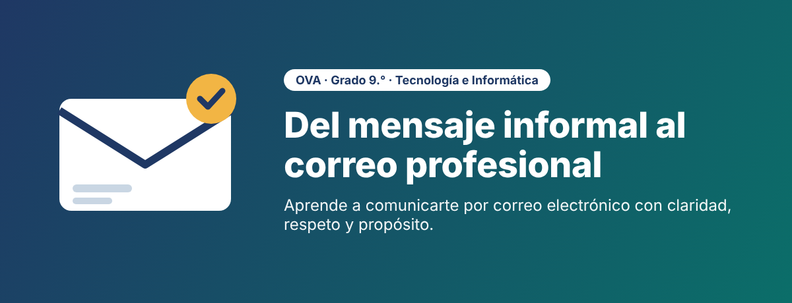

Bienvenida al OVA

Bienvenida
Todos los días envías mensajes por el celular. Pero, ¿sabes escribirle a un docente, al rector o a una empresa de manera que te tomen en serio? En este recurso vas a pasar del mensaje informal al correo electrónico profesional, una herramienta que usarás para entregar tareas, pedir permisos, inscribirte en la universidad y buscar empleo.
Objetivo de aprendizaje
Redactar, enviar y gestionar correos electrónicos con estructura formal, aplicando las normas de netiqueta y reconociendo el valor del correo como herramienta de comunicación académica y profesional.
¿Qué vas a lograr?
- Saber: reconocer las seis partes del correo formal y las reglas de netiqueta.
- Saber hacer: redactar un correo, adjuntar un archivo y enviarlo correctamente.
- Ser: valorar la comunicación digital respetuosa y el uso responsable de la red.
Ruta de aprendizaje
| Momento | ¿Qué harás? | Tiempo |
|---|---|---|
| 1. Exploración | Verás un video corto y responderás la pregunta orientadora en el foro. | 30 min |
| 2. Comprensión | Estudiarás las partes del correo formal, la netiqueta y el manejo de adjuntos. | 40 min |
| 3. Aplicación | Resolverás actividades autocorregibles, corregirás correos en pareja y enviarás un correo real. | 80 min |
¿Cómo moverte por el recurso?
- Usa el menú de páginas o los botones Anterior y Siguiente, en orden.
- La barra de accesibilidad te permite aumentar el tamaño de la letra o activar la lectura en voz alta.
- Si no tienes conexión en casa, descarga la guía en PDF que encontrarás en el Momento 2.